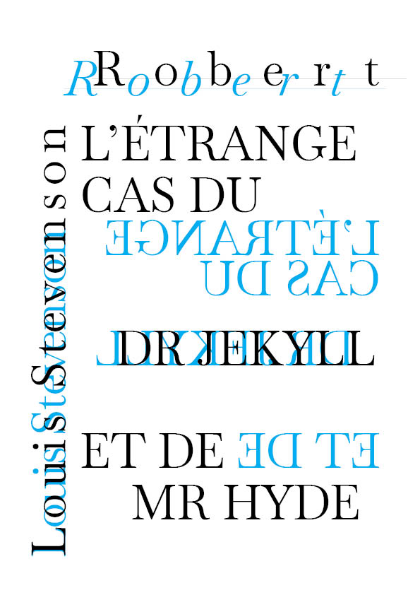
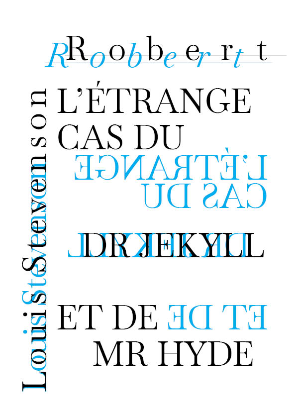
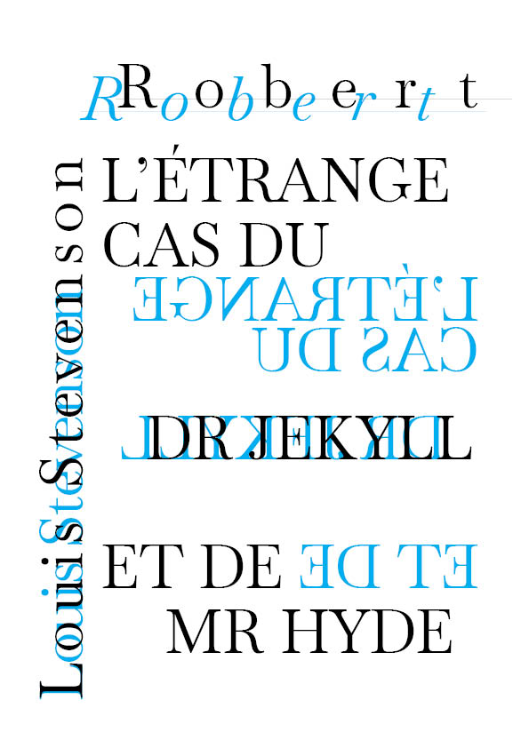

Eloise Caro Portfolio
Contact
@eloise.draw

Specimen\\
Conception d'un spécimen sous la forme d'une edition. Le sujet de celle-ci est la typographie "Baskervville", qui est le revival d'un revival de Baskerville (baskerwille) élaboré par des étudiants de l'anrt. Ce spécimen s'inspire du double, et s'appuie sur le texte "L’ÉTRANGE CAs DU DR JEKYLL ET DE MR HYDE" de 1885 écrit par Robert Louis Stevenson. (1885)
Retour Acceuil


 
